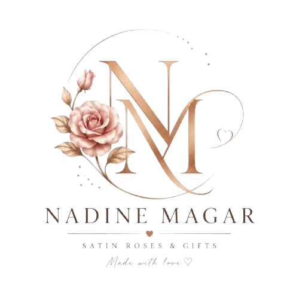

Satin Roses & Gifts - Made with love ♡
أهلاً، أنا نادين مجر، مؤسسة براند 𝕹𝖆𝖉𝖎𝖓𝖊 𝕸𝖆𝖌𝖆𝖗 🌷
بدأت فكرة البراند من حبي للتفاصيل الهادية واللمسات اللي بتخلي أي هدية ليها معنى مختلف. كنت دايمًا مؤمنة إن الهدية الحلوة مش بس شكل، لكنها إحساس وذكرى بتفضل مع صاحبها.
من هنا بدأت رحلتي مع الورد الستان، لأنه بيجمع بين الأناقة، والرقي، وفكرة إنه بيفضل محتفظ بجماله لفترة طويلة. كل بوكيه أو بوكس هدايا في 𝕹𝖆𝖉𝖎𝖓𝖊 𝕸𝖆𝖌𝖆𝖗 بيتعمل بعناية وحب، من اختيار الألوان والتنسيق، لحد آخر تفصيلة في التغليف.
هدفي إن كل قطعة أقدمها تكون أكتر من مجرد هدية، تكون ذكرى جميلة تعيش، وتعبر عن مشاعر حقيقية بطريقة راقية ومميزة.
في 𝕹𝖆𝖉𝖎𝖓𝖊 𝕸𝖆𝖌𝖆𝖗، إحنا مش بنقدم ورد وبس، إحنا بنصنع لحظات وذكريات بتفضل موجودة. 🤍🌹
✨ ملاحظات هامة:
 اطلب الآن عبر واتساب
اطلب الآن عبر واتساب